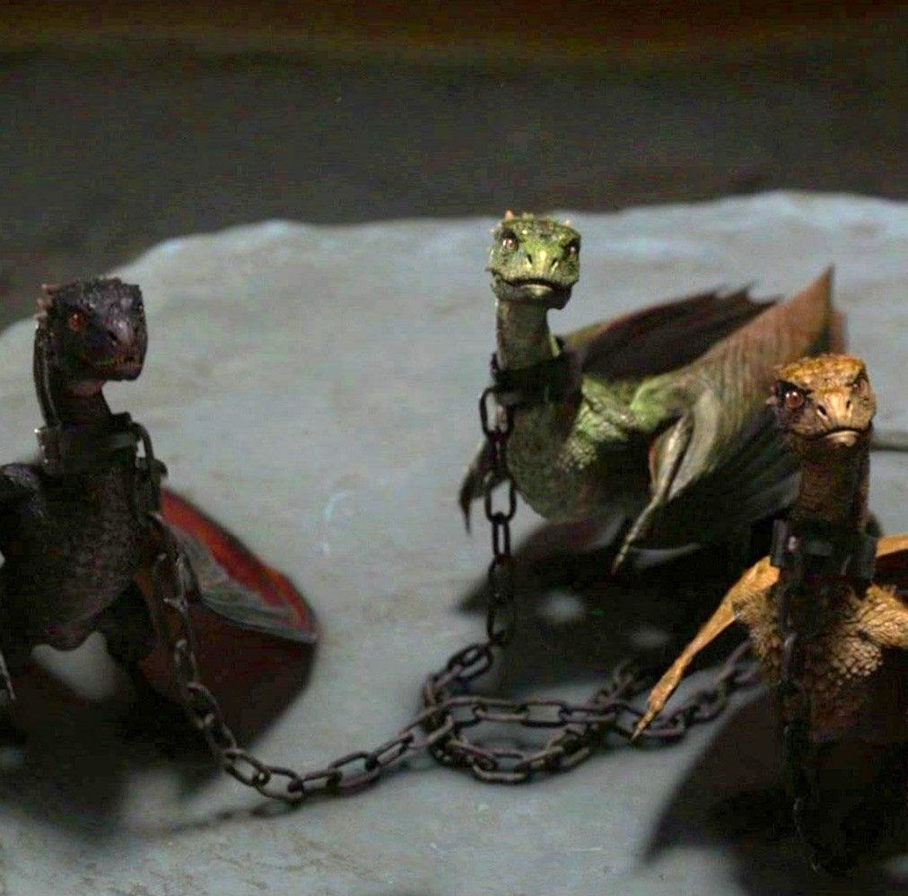

Game of Thrones
Curiosidades
Quiz
Personagens
SAIR
Olá,
Curiosidades
Lino Facioli, o Robin Arryn,
é brasileiro de Ribeirão Preto,
em São Paulo
A série já recebeu 110
indicações ao Emmy Awards.
Destas, "Game of Thrones" levou
38 troféus para casa, tornando-se
recordista de prêmios.
Quando Tywin Lannister
esfolou um cervo, aquilo
realmente aconteceu. O ator
até recebeu instruções de um
açougueiro para matar o animal.
O modo de vida de
gatos e gansos
inspiraram a criação
dos dragões de Game of Thrones.

O autor escreve
sua obra no sistema
operacional DOS, utilizado
nas décadas de 1980 e 1990.
Dessa forma, ele não se distrai
navegando na internet.